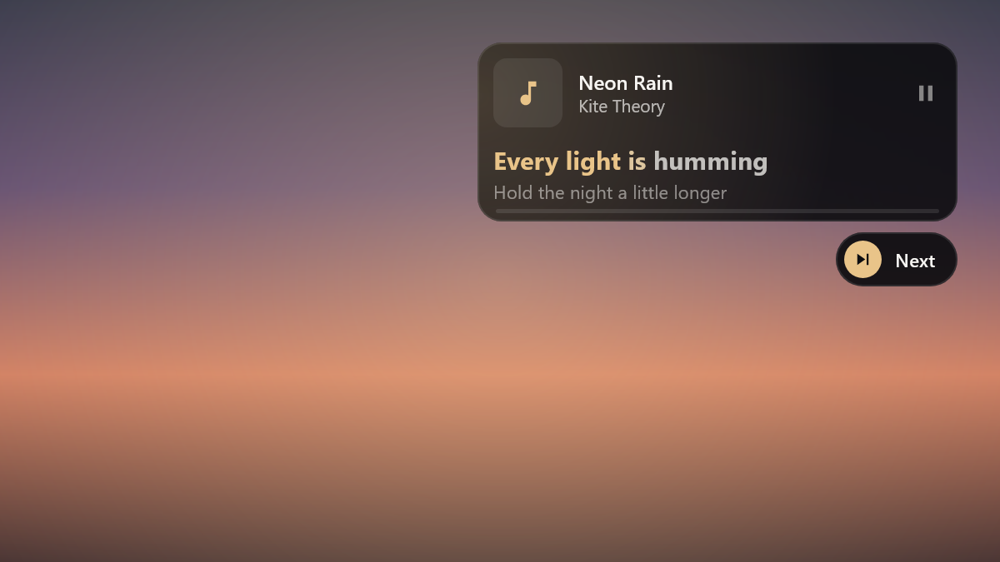

Game ModeYouTube Music without alt-tabbing
Skip, pause and turn it down from inside your game, and keep the lyrics on screen while you play. Part of Lyrenne Music Player for Windows. Free, open source, no ads.
Download Lyrenne
Changing the song mid-match usually means alt-tabbing out and hoping the game survives it. Game Mode keeps your hands on the keyboard: global hotkeys work while the game has focus, and a small overlay shows what is playing and the line being sung, right on top of the game.
What It Does
Works while the game has focus
Play, pause, skip, volume, like and seek from anywhere. Rebind any of them by pressing the keys you want; a combo another app already owns is flagged so it never fights.
Lyrics over your game
The current line fills word by word in the colour of the album cover, with the next line dimmed under it. Pin it with Ctrl+Alt+Home, or set it to Always on.
Never steals focus
Clicks go straight through the overlay and it never becomes the active window, so your game keeps every input. It stays off the taskbar and out of Alt+Tab.
You know it worked
Every hotkey flashes a small confirmation, and volume changes show the level, so you never wonder whether a key press landed.
As much as you want
Off, a song toast on every change, a lyrics strip while you play, or Always on. Pick the corner, the size, the opacity and the screen.
Follows your game
The overlay appears on the screen the game is on, or stays on one screen you choose.
Default Hotkeys
All under one hand, around the arrow keys. Every one can be changed in Settings > Game Mode.
On out of the box
Ctrl+Alt+Enter play or pause · Ctrl+Alt+Right next ·
Ctrl+Alt+Left previous · Ctrl+Alt+Up / Down volume ·
Ctrl+Alt+Home pin the song and lyrics on screen
One switch away
Ctrl+Alt+Insert like · Ctrl+Alt+Shift+Right / Left
seek 10 seconds · Ctrl+Alt+Page Down peek for a few seconds ·
Ctrl+Alt+End show or hide the overlay
Questions
Does the overlay work in fullscreen games?
It draws over borderless and windowed games. Exclusive fullscreen hides every overlay that is not part of the game itself, so switch the game to borderless to see it. The hotkeys work either way.
Will it cost me frames?
The overlay window is hidden whenever it has nothing to show, and nothing on it animates continuously except the lyric fill while it is up.
Does it work on Linux and macOS?
The overlay is Windows only for now. Global hotkeys also work on Linux under X11; on
Wayland, bind playerctl play-pause in your desktop's own shortcuts, since
Lyrenne publishes MPRIS.
What about VR and the Steam Deck?
Lyrenne VR puts the player on your wrist in PC VR games, and Lyrenne for Decky puts it in the Steam Deck's Quick Access Menu.